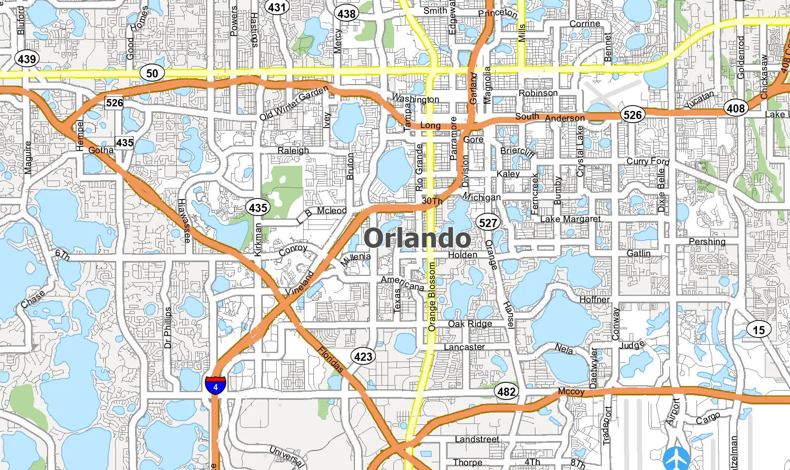
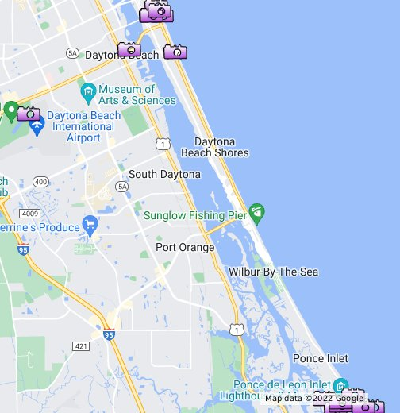

MIAMI

ORLANDO, FL
“Where dreams come true.” Well, hopefully. Next largest city provides hope for human contact, any information as to what may have happened in the world.
But the greater the population, the greater chances of something going wrong…. This may provide answers and hope, but as well may be a hazard…

DAYTONA BEACH, FL
The racetrack, the airport, might as well be a retirement home for the elderly. Although a much smaller town than Miami, the party scene could rage on,
finishing up your spring break and forgetting about where everyone may have gone. Less population, less potential to find answers, but the tradeoff is engaging….